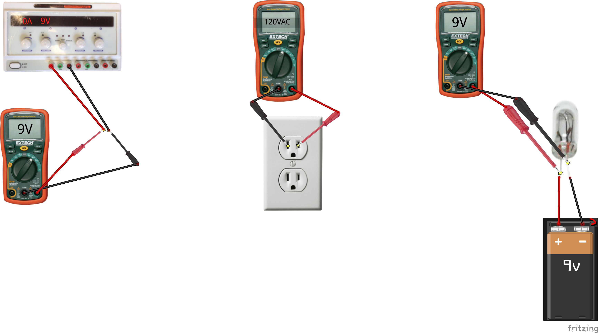

Exercise: Bench, Battery, Grid
Objective
Learn basic electrical safety, recognize AC and DC sources, learn scale
of voltage units.
Caution: this lesson involves measuring dangerous voltages from the AC
wall outlets. Please observe meter settings carefully and avoid touching
any exposed metal.
Steps and observations
- Set the DMM to VDC. Place probes on a 9V battery as shown. Observe
reading. It should show approximately 9 volts.
- Reverse the probes on the battery. Observe reading. It should be the
same magnitude with reversed sign.
- Find an incandescent lamp. The lab stocks a grab-bag of lamps with
different voltage ratings. Touch leads of lamp to battery contacts. If
the lamp doesn't light, try a smaller one. If it burns out, try a
larger one.
- Reverse lamp leads. It should still light: incandescent lamps have no
polarity.
- A 9V battery has a low enough voltage that it won't cause much current
flow through dry skin. However, now is a good time to start building the
habit of not touching wires or leads, and instead using a meter to check
potentials.
- Note: the lab doesn't have enough power supplies for every student
pair to work with their own; please share, multiple circuits can be
connected in parallel to each supply.
- Set the DC power supply to 9 Volts.
- Repeat DC voltage measurements between red and black terminals.
- Connect the lamp to the power supply terminals.
- Trying varying the power supply voltage up and down by 2 Volts. Check
the voltage using the DMM, not just the power supply display. Observe the
response of the lamp.
- Caution: the following step calls for measuring the AC wall outlet
voltage. Line power has a high enough voltage to be fatal, so think
through how to make contact safely without any chance of exposed metal
contacting your body.
- Set the DMM to VAC. Outlet voltage is alternating current for power
delivery, so this configures the meter to measure the RMS
voltage.
- Double-check that the probe connectors are inserted into the probe
ports for voltage measurement, NOT current measurement.
- Carefully touch the probe tips to the metal blade contacts inside the
outlet. Observe the reading, it should be approximately 120.
- Repeat between each blade contact and the round grounding contact.
Observe readings.
Comments
Our typical sensor circuits will all use DC supply voltages ranging from
3.3 to 12V. Our typical actuator circuits will use DC supply voltages from
5V to 12V. Many electronic components have tightly specified supply voltage
ranges and will malfunction or be destroyed outside that range.


Other Files
- 1.a.i.1_bench-battery-grid.fzz
- 1.a.i.1_bench-battery-grid.sch